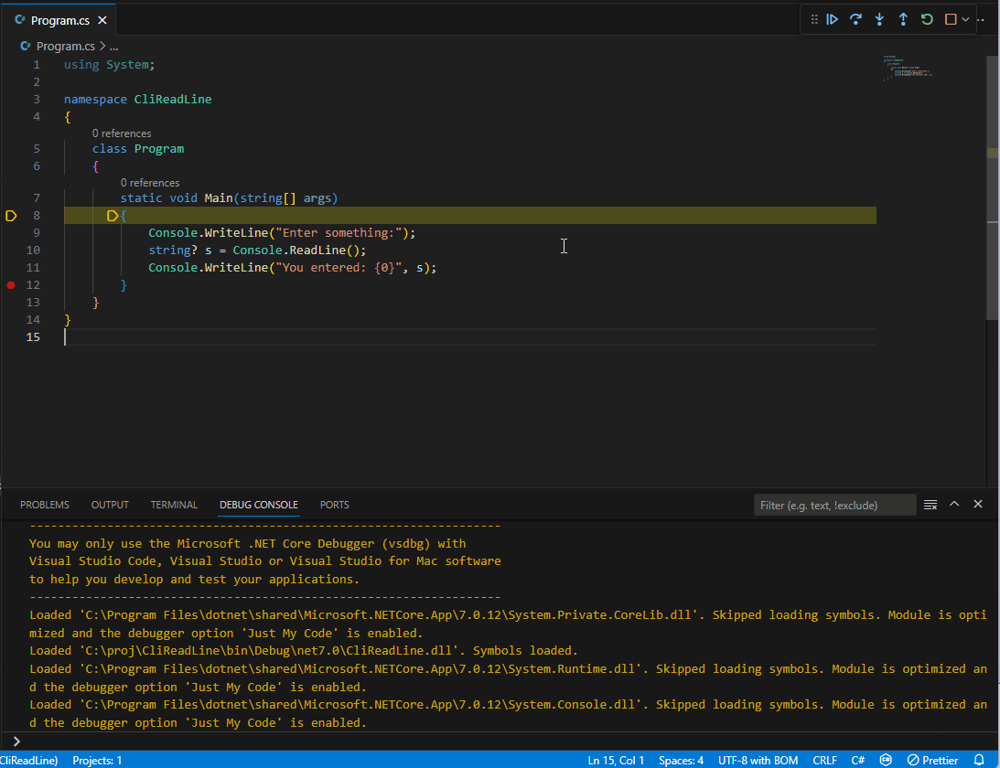

配置 C# 调试
你可以通过 launch.json、launchSettings.json 或用户 settings.json 文件在 Visual Studio Code 中配置 C# 调试器。
演练：设置命令行参数
在我们深入了解所有可能选项的细节之前，先来演练一个基本场景：为你的程序设置命令行参数。这些步骤同样适用于更新其他基本选项，如环境变量或当前工作目录。
方式一：launchSettings.json
对于 C# Dev Kit，推荐的调试方式是让 C# Dev Kit 根据项目文件中的设置自动确定调试方式。这意味着你要么没有 "type": "dotnet"。对于命令行参数，"根据项目文件来确定"意味着从 launchSettings.json 的优势在于它允许设置在 Visual Studio Code、完整版 Visual Studio 和 dotnet run 之间共享。
对于这种情况，设置命令行参数的步骤如下：
- 在工作区资源管理器视图中，导航到你要启动的项目目录（.csproj 文件所在的目录）
- 如果还没有
Properties目录，创建它 - 如果还没有
launchSettings.json文件，创建一个，你可以使用下面的文本作为示例 - 将
commandLineArgs属性修改为你想要的命令行参数
launchSettings.json 文件示例：
{
"profiles": {
"MyLaunchProfileName": {
"commandName": "Project",
"commandLineArgs": "MyFirstArgument MySecondArgument"
}
}
}方式二：launch.json
如果你在 VS Code 中使用的是 coreclr 或 clr 调试适配器类型，命令行参数存储在
- 打开
/.vscode/launch.json - 找到你要启动的
coreclr或clr启动配置 - 编辑
args属性。该属性可以是字符串，也可以是字符串数组配置 launchSettings.json
使用 C# Dev Kit，你可以将 Visual Studio 中的 launchSettings.json 带到 Visual Studio Code 中使用。
示例：
{
"iisSettings": {
"windowsAuthentication": false,
"anonymousAuthentication": true,
"iisExpress": {
"applicationUrl": "http://localhost:59481",
"sslPort": 44308
}
},
"profiles": {
"EnvironmentsSample": {
"commandName": "Project",
"dotnetRunMessages": true,
"launchBrowser": true,
"applicationUrl": "https://localhost:7152;http://localhost:5105",
"environmentVariables": {
"ASPNETCORE_ENVIRONMENT": "Development"
}
},
"EnvironmentsSample-Staging": {
"commandName": "Project",
"dotnetRunMessages": true,
"launchBrowser": true,
"applicationUrl": "https://localhost:7152;http://localhost:5105",
"environmentVariables": {
"ASPNETCORE_ENVIRONMENT": "Staging",
"ASPNETCORE_DETAILEDERRORS": "1",
"ASPNETCORE_SHUTDOWNTIMEOUTSECONDS": "3"
}
},
"EnvironmentsSample-Production": {
"commandName": "Project",
"dotnetRunMessages": true,
"launchBrowser": true,
"applicationUrl": "https://localhost:7152;http://localhost:5105",
"environmentVariables": {
"ASPNETCORE_ENVIRONMENT": "Production"
}
},
"IIS Express": {
"commandName": "IISExpress",
"launchBrowser": true,
"environmentVariables": {
"ASPNETCORE_ENVIRONMENT": "Development"
}
}
}
}配置文件属性
commandLineArgs- 传递给被运行目标的参数。executablePath- 可执行文件的绝对或相对路径。workingDirectory- 设置命令的工作目录。launchBrowser- 设置为true以启动浏览器。applicationUrl- 以分号分隔的 URL 列表，用于配置 Web 服务器。sslPort- 用于网站的 SSL 端口。httpPort- 用于网站的 HTTP 端口。可配置选项列表
以下是你可能在调试时需要更改的常用选项。
PreLaunchTask
preLaunchTask 字段在调试程序之前运行 tasks.json 中关联的 taskName。你可以通过从 VS Code 命令面板执行 任务：配置任务运行程序 命令来获得默认的生成预启动任务。
这将创建一个运行 dotnet build 的任务。你可以在 VS Code 任务 文档中了解更多信息。
可用性
launch.json✔️settings.json❌launchSettings.json❌Program
Program 字段设置为要启动的应用程序 dll 或 .NET Core 宿主可执行文件的路径。
此属性通常采用以下形式："${workspaceFolder}/bin/Debug/\
示例："${workspaceFolder}/bin/Debug/netcoreapp1.1/MyProject.dll"
其中：
- \
- \
可用性
launch.json✔️settings.json❌launchSettings.json✔️ 通过executablePathCwd
目标进程的工作目录。
可用性
launch.json✔️settings.json❌launchSettings.json✔️ 通过workingDirectoryArgs
这些是将传递给程序的参数。
可用性
launch.json✔️settings.json❌launchSettings.json✔️ 通过commandLineArgs在入口点停止
如果你需要在目标的入口点处停止，可以可选地将 stopAtEntry 设置为 "true"。
可用性
launch.json✔️settings.json✔️ 通过csharp.debug.stopAtEntrylaunchSettings.json❌启动 Web 浏览器
ASP.NET Core 项目的默认 launch.json 模板（自 C# 扩展 v1.20.0 起）使用以下配置来使 VS Code 在 ASP.NET 启动时启动 Web 浏览器：
"serverReadyAction": {
"action": "openExternally",
"pattern": "\\bNow listening on:\\s+(https?://\\S+)"
}有关此配置的说明：
- 如果你不希望浏览器自动启动，可以直接删除此元素（如果
launch.json中有launchBrowser元素，也将其删除）。 - 此模式使用 ASP.NET Core 写入控制台的 URL 来启动 Web 浏览器。如果你想修改 URL，请参阅指定浏览器的 URL。当目标应用程序运行在另一台机器或容器上，或者
applicationUrl具有特殊的主机名（例如："applicationUrl": "http://*:1234/"）时，这可能会很有用。 serverReadyAction是 VS Code 的新功能。推荐使用它来替代之前内置在 C# 扩展调试器中的launchBrowser功能，因为它可以在 C# 扩展运行在远程机器上时使用、使用为 VS Code 配置的默认浏览器，并且还允许使用脚本调试器。如果这些功能对你都不重要，你可以继续使用launchBrowser。如果你想运行特定程序而不是启动默认浏览器，你也可以继续使用launchBrowser。- 关于
serverReadyAction的更多文档可以在 Visual Studio Code 2019 年 2 月发布说明 中找到。 - 其工作原理是 VS Code 抓取输出到控制台的内容。如果某一行与模式匹配，它会针对模式"捕获"到的 URL 启动浏览器。
以下是对模式作用的解释：
\\b：匹配单词边界。注意\b表示单词边界，但由于这是在 JSON 字符串中，\需要进行转义，因此是\\b。Now listening on:：这是一个字符串字面量，表示接下来的文本必须是Now listening on:。\\s+：匹配一个或多个空格字符。(：这是"捕获组"的开始。它表示要保存并用于启动浏览器的文本区域。http：字符串字面量。s?：要么是字符s，要么是什么都没有。://：字符串字面量。\\S+：一个或多个非空白字符。)：捕获组的结束。
- 这两种浏览器启动方式都需要
"console": "internalConsole"，因为浏览器启动器会抓取目标进程的标准输出来判断 Web 服务器何时完成初始化。指定浏览器的 URL
如果你想忽略来自控制台输出的 URL，可以从模式中移除 ( 和 )，并将 uriFormat 设置为你想要启动的 URL。
示例：
"serverReadyAction": {
"action": "openExternally",
"pattern": "\\bNow listening on:\\s+https?://\\S",
"uriFormat": "http://localhost:1234"
}如果你想使用控制台输出中的端口号，但不使用主机名，你也可以使用类似以下的配置：
"serverReadyAction": {
"action": "openExternally",
"pattern": "\\bNow listening on:\\s+http://\\S+:([0-9]+)",
"uriFormat": "http://localhost:%s"
}实际上，你几乎可以打开任何 URL，例如，你可以通过类似以下配置打开默认的 Swagger UI：
"serverReadyAction": {
"action": "openExternally",
"pattern": "\\bNow listening on:\\s+http://\\S+:([0-9]+)",
"uriFormat": "http://localhost:%s/swagger/index.html"
}注意 你需要确保你的项目已设置好 Swagger UI 才能使用。
可用性
launch.json✔️settings.json❌launchSettings.json✔️ 通过launchBrowser和applicationUrl环境变量
可以使用以下模式将环境变量传递给程序：
"env": {
"myVariableName":"theValueGoesHere"
}可用性
launch.json✔️settings.json❌launchSettings.json✔️ 通过environmentVariables控制台（终端）窗口
"console" 设置控制目标应用启动到哪个控制台（终端）窗口。它可以设置为以下任一值 --
"internalConsole"（默认）：目标进程的控制台输入（stdin）和输出（stdout/stderr）通过 VS Code 调试控制台进行路由。此模式的优势在于，它允许你在一个地方同时查看调试器和目标程序的消息，因此你不会错过重要消息，也无需来回切换。这对于具有简单控制台交互的程序很有用（例如：使用Console.WriteLine和/或Console.ReadLine）。当目标程序需要完全控制控制台时不应使用此模式，例如更改光标位置的程序、使用Console.ReadKey进行输入的程序等。有关向控制台输入的说明，请参见下文。"integratedTerminal"：目标进程将在 VS Code 集成终端 中运行。在编辑器下方的选项卡组中选择终端选项卡与你的应用程序交互。使用此模式时，默认情况下调试控制台在开始调试时不会显示。如果使用launch.json，可以通过internalConsoleOptions进行配置。"externalTerminal"：目标进程将在其自己的外部终端中运行。使用此模式时，你需要在 Visual Studio Code 和外部终端窗口之间切换焦点。
可用性
launch.json✔️settings.json✔️ 通过csharp.debug.consolelaunchSettings.json❌注意：
csharp.debug.console设置仅适用于使用dotnet调试配置类型启动的控制台项目。使用 internalConsole 时向目标进程输入文本
当使用 internalConsole 时，你可以在 Visual Studio Code 中输入文本，这些文本将从 Console.ReadLine 和类似的从 stdin 读取的 API 返回。要实现这一点，在程序运行时，在调试控制台底部的输入框中输入文本。按下 kbstyle(Enter) 将把文本发送到目标进程。请注意，如果你在程序在调试器下停止时在此框中输入文本，此文本将被作为 C# 表达式求值，而不会发送到目标进程。
示例：

launchSettingsProfile 和 launchSettingsFilePath
虽然对 launchSettings.json 的完整支持需要使用 "type": "dotnet" 的启动配置，但 coreclr 和 clr 调试器类型也支持 launchSettings.json 功能的有限子集。这对于希望在 Visual Studio Code 和完整版 Visual Studio 中使用相同设置的用户非常有用。
要配置使用哪个 launchSettings.json 配置文件（或阻止使用它），请设置 launchSettingsProfile 选项：
"launchSettingsProfile": "ProfileNameGoesHere"然后，例如，将使用此示例 launchSettings.json 文件中的 myVariableName：
{
"profiles": {
"ProfileNameGoesHere": {
"commandName": "Project",
"environmentVariables": {
"myVariableName":"theValueGoesHere"
}
}
}
}如果未指定 launchSettingsProfile，将使用第一个带有 "commandName": "Project" 的配置文件。
如果 launchSettingsProfile 设置为 null/空字符串，则 Properties/launchSettings.json 将被忽略。
默认情况下，调试器将在 {cwd}/Properties/launchSettings.json 中搜索 launchSettings.json。要自定义此路径，请设置 launchSettingsFilePath：
"launchSettingsFilePath": "${workspaceFolder}/<Relative-Path-To-Project-Directory/Properties/launchSettings.json"限制：
- 仅支持
"commandName": "Project"的配置文件。 - 仅支持
environmentVariables、applicationUrl和commandLineArgs属性 launch.json中的设置将优先于launchSettings.json中的设置，因此，例如，如果args在launch.json中已设置为非空字符串/数组，则launchSettings.json的内容将被忽略。
可用性
launch.json✔️settings.json❌launchSettings.json❌源文件映射
你可以选择性地通过提供以下形式的映射来配置源文件的打开方式：
"sourceFileMap": {
"C:\\foo":"/home/me/foo"
}在此示例中：
C:\foo是一个或多个源文件（例如：program.cs）在模块（例如：MyCode.dll）编译时的原始位置。它可以是一个包含源文件的目录，也可以是一个源文件的完整路径（例如：c:\foo\program.cs）。它不需要在运行 Visual Studio Code 的计算机上存在，或者（如果你正在进行远程调试）也不需要在远程计算机上存在。调试器从.pdb（符号）文件中读取源文件路径，并使用此映射来转换路径。/home/me/foo是 Visual Studio Code 现在可以找到源文件的路径。
可用性
launch.json✔️settings.json✔️ 通过csharp.debug.sourceFileMaplaunchSettings.json❌仅我的代码
你可以通过将 justMyCode 设置为 "false" 来选择禁用它。当你正在尝试调试一个没有符号或被优化的已下载库时，应该禁用"仅我的代码"。
"justMyCode":false"仅我的代码"是一组功能，它通过隐藏你可能在使用的一些优化库（如 .NET Framework 本身）的细节，使调试你的代码更加容易。此功能的最重要子部分是 --
- 用户未处理异常：在异常即将被框架捕获之前自动停止调试器
- "仅我的代码"单步执行：在单步执行时，如果框架代码回调到用户代码，则自动停止。
可用性
launch.json✔️settings.json✔️ 通过csharp.debug.justMyCodelaunchSettings.json❌要求精确源文件
调试器要求 pdb 和源代码必须完全一致。要更改此设置并禁用源文件必须一致，请添加：
"requireExactSource": false可用性
launch.json✔️settings.json✔️ 通过csharp.debug.requireExactSourcelaunchSettings.json❌单步执行属性和运算符
调试器默认情况下会跳过托管代码中的属性和运算符。在大多数情况下，这提供了更好的调试体验。要更改此设置并启用单步执行属性或运算符，请添加：
"enableStepFiltering": false可用性
launch.json✔️settings.json✔️ 通过csharp.debug.enableStepFilteringlaunchSettings.json❌日志记录
你可以选择性地启用或禁用应记录到输出窗口的消息。日志记录字段中的标志包括：'exceptions'、'moduleLoad'、'programOutput'、'browserStdOut' 和 'consoleUsageMessage'。
在 'logging.diagnosticsLog' 下还有一些用于诊断调试器问题的高级选项。
可用性
launch.json✔️settings.json✔️ 通过csharp.debug.logginglaunchSettings.json❌PipeTransport
如果你需要让调试器通过另一个可执行文件中继标准输入和输出，来连接远程计算机，以在 VS Code 和 .NET Core 调试器后端（vsdbg）之间进行通信，则按以下模式添加 pipeTransport 字段：
"pipeTransport": {
"pipeProgram": "ssh",
"pipeArgs": [ "-T", "ExampleAccount@ExampleTargetComputer" ],
"debuggerPath": "~/vsdbg/vsdbg",
"pipeCwd": "${workspaceFolder}",
"quoteArgs": true
}有关 pipe transport 的更多信息可以在此处找到：
你可以在此处找到为适用于 Linux 的 Windows 子系统（WSL）配置 pipe transport 的信息：
可用性
launch.json✔️settings.json❌launchSettings.json❌特定于操作系统的配置
如果有需要针对每个操作系统进行更改的特定命令，你可以使用以下字段：'windows'、'osx' 或 'linux'。你可以为特定操作系统替换上述任何字段。
禁用 JIT 优化
.NET 调试器支持以下选项。如果为 true，当优化过的模块（以 Release 配置编译的 .dll）加载到目标进程时，调试器将要求即时编译器生成禁用优化的代码。该选项默认为 false。
"suppressJITOptimizations": true.NET 中优化的运作方式： 如果你正在尝试调试代码，当该代码未经优化时会更容易。这是因为当代码被优化时，编译器和运行时会对生成的 CPU 代码进行修改，使其运行得更快，但与原始源代码的直接映射关系会更少。这意味着调试器通常无法告诉你局部变量的值，并且代码单步执行和断点可能无法按预期工作。
通常，Release 生成配置会创建优化代码，而 Debug 生成配置不会。Optimize MSBuild 属性控制是否告诉编译器优化代码。
在 .NET 生态系统中，代码从源代码转换为 CPU 指令采用两步过程：首先，C# 编译器将你输入的文本转换为称为 MSIL 的中间二进制形式，并将其写入 .dll 文件。随后，.NET 运行时将此 MSIL 转换为 CPU 指令。这两个步骤都可以在一定程度上进行优化，但由 .NET 运行时执行的第二步会进行更显著的优化。
此选项的作用： 此选项控制当以启用优化编译的 DLL 加载到目标进程内部时会发生什么。如果此选项为 false（默认值），则当 .NET 运行时将 MSIL 代码编译为 CPU 代码时，它保持优化启用。如果此选项为 true，则调试器请求禁用优化。
何时应使用此选项： 当你从其他来源（如 NuGet 包）下载了 DLL，并且你想调试此 DLL 中的代码时，应使用此选项。为了使其正常工作，你还必须找到此 DLL 的符号（.pdb）文件。
如果你只对调试本地构建的代码感兴趣，最好将此选项保留为 false，因为在某些情况下，启用此选项会显著减慢调试速度。造成这种减慢有两个原因 --
- 优化代码运行得更快。如果你为大量代码关闭优化，时间可能会累积。
- 如果你启用了"仅我的代码"，调试器甚至不会尝试为已优化的 DLL 加载符号。查找符号可能需要很长时间。
此选项的限制： 在以下两种情况下，此选项不会生效：
1：在将调试器附加到已运行的进程的情况下，此选项对调试器附加时已加载的模块没有影响。
2：此选项对已预编译（ngen'ed）为本机代码的 DLL 没有影响。但是，你可以通过使用设置为 0 的环境变量 COMPlus_ReadyToRun 启动进程来禁用预编译代码的使用。如果你以较旧版本的 .NET Core（2.x）为目标，还需要将 COMPlus_ZapDisable 设置为 '1'。如果你在调试器下启动，可以通过将以下设置添加到 launch.json 来进行此配置：
"env": {
"COMPlus_ZapDisable": "1",
"COMPlus_ReadyToRun": "0"
}可用性
launch.json✔️settings.json✔️ 通过csharp.debug.suppressJITOptimizationslaunchSettings.json❌符号选项
symbolOptions 元素允许自定义调试器搜索符号的方式。示例：
"symbolOptions": {
"searchPaths": [
"~/src/MyOtherProject/bin/debug",
"https://my-companies-symbols-server"
],
"searchMicrosoftSymbolServer": true,
"searchNuGetOrgSymbolServer": true,
"cachePath": "/symcache",
"moduleFilter": {
"mode": "loadAllButExcluded",
"excludedModules": [ "DoNotLookForThisOne*.dll" ]
}
}属性
searchPaths：用于搜索 .pdb 文件的符号服务器 URL（例如：https://msdl.microsoft.com/download/symbols）或目录（例如：/build/symbols）的数组。这些目录将在默认位置（模块旁边和 .pdb 最初放置的路径）之外额外进行搜索。
searchMicrosoftSymbolServer：如果为 true，Microsoft 符号服务器（https://msdl.microsoft.com/download/symbols）将被添加到符号搜索路径中。如果未指定，此选项默认为 false。
searchNuGetOrgSymbolServer：如果为 true，Nuget.org 符号服务器（https://symbols.nuget.org/download/symbols）将被添加到符号搜索路径中。如果未指定，此选项默认为 false。
cachePath：从符号服务器下载的符号应缓存的目录。如果未指定，在 Windows 上调试器默认为 %TEMP%\\SymbolCache，在 Linux 和 macOS 上调试器默认为 ~/.dotnet/symbolcache。
moduleFilter.mode：此值为 "loadAllButExcluded" 或 "loadOnlyIncluded"。在 "loadAllButExcluded" 模式下，调试器加载所有模块的符号，除非该模块在 'excludedModules' 数组中。在 "loadOnlyIncluded" 模式下，调试器不会尝试为任何模块加载符号，除非它在 'includedModules' 数组中，或者通过 'includeSymbolsNextToModules' 设置包含在内。
loadAllButExcluded 模式的属性
moduleFilter.excludedModules：调试器不应加载符号的模块数组。支持通配符（例如：MyCompany.*.dll）。
loadOnlyIncluded 模式的属性
moduleFilter.includedModules：调试器应加载符号的模块数组。支持通配符（例如：MyCompany.*.dll）。
moduleFilter.includeSymbolsNextToModules：如果为 true，对于不在 'includedModules' 数组中的任何模块，调试器仍会检查模块本身和启动可执行文件旁边的位置，但不会检查符号搜索列表上的路径。此选项默认为 'true'。
可用性
launch.json✔️settings.json✔️ 通过csharp.debug.symbolOptionslaunchSettings.json❌Source Link 选项
Source Link 是一项功能，使得当你在调试在另一台计算机上构建的代码（例如来自 NuGet 包的代码）时，调试器可以自动通过从 Web 下载来获取匹配的源代码。要使其工作，你所调试代码的 .pdb 文件包含将 DLL 中的源文件映射到调试器可以从中下载的 URL 的数据。有关 Source Link 的更多信息，请访问 https://aka.ms/SourceLinkSpec。
launch.json 中的 sourceLinkOptions 元素允许按 URL 自定义 Source Link 行为。它是一个从 URL 到该 URL 的 Source Link 选项的映射。URL 名称中支持通配符。目前唯一的自定义选项是该 URL 是否启用 Source Link，但将来可能会添加更多选项。
示例：
"sourceLinkOptions": {
"https://raw.githubusercontent.com/*": { "enabled": true },
"*": { "enabled": false }
}此示例为 GitHub URL 启用 Source Link，并为所有其他 URL 禁用 Source Link。
此选项的默认值为所有 URL 启用 Source Link。同样，对于 sourceLinkOptions 映射中没有任何规则的 URL，Source Link 是启用的。
要禁用所有 URL 的 Source Link，请使用 "sourceLinkOptions": { "*": { "enabled": false } }。
如果多个条目覆盖了同一个 URL，则使用更具体的条目（字符串长度更长的条目）。
目前 Source Link 仅适用于无需身份验证即可访问的源文件。因此，例如，调试器可以从 GitHub 上的开源项目下载源文件，但不能从私有 GitHub 仓库或 Visual Studio Team Services 下载。
可用性
launch.json✔️settings.json❌launchSettings.json❌目标架构选项（macOS M1）
Apple M1 上的 .NET 同时支持 x86_64 和 ARM64。在调试时，调试器附加到的进程架构与调试器架构必须匹配。如果不匹配，可能会导致 Unknown Error: 0x80131c3c。
扩展尝试根据 PATH 中 dotnet --info 的输出来解析 targetArchitecture，否则尝试使用与 VS Code 相同的架构。
你可以通过在 launch.json 中设置 targetArchitecture 来覆盖此行为。
示例：
"targetArchitecture": "arm64"可用性
launch.json✔️settings.json❌launchSettings.json❌检查 DevCert
此选项控制在启动时，调试器是否应检查计算机是否具有用于开发在 HTTPS 端点上运行的 Web 项目的自签名 HTTPS 证书。为此，它会尝试运行 dotnet dev-certs https --check --trust，如果没有找到证书，它将提示用户建议创建一个。如果用户同意，扩展将运行 dotnet dev-certs https --trust 来创建一个受信任的自签名证书。
如果未指定，当设置了 serverReadyAction 时默认为 true。此选项在 Linux、VS Code 远程和 VS Code for the Web 场景中不起作用。
你可以通过在 launch.json 中将 checkForDevCert 设置为 false 来覆盖此行为。
示例：
"checkForDevCert": "false"可用性
launch.json✔️settings.json❌launchSettings.json✔️ 通过useSSL另请参阅
- launchSettings.json 架构
- 在 ASP.NET Core 中使用多个环境